Restauro 220D (1974)
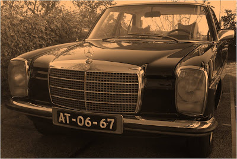
Este foi o início de uma odisseia pessoal: escolher, recuperar e devolver vida a um Mercedes W115 220D, peça a peça, com tempo, paciência e muita paixão.
Tudo começou pela paixão automóvel que me assolapa. Na ceia de Natal de 2005 discutíamos à mesa automóveis, velocidades, consumos, fiabilidade, charme e tudo o mais que envolve o mundo automóvel. Na minha opinião e na de mais alguns presentes, chegámos à conclusão que os clássicos tinham mais charme, um je ne sais quoi, que os novos não têm. Na sociedade consumista de hoje, um modelo recente é sempre espectacular, mas com a chegada dos novos modelos da mesma marca ou até de outras, deixamos de lhes dar a importância que eles tinham quando novos.
É como aquela máxima: a beleza é efémera. Quem não olha para o actual Classe C ou Classe E e o prefere em detrimento do exactamente anterior? Com os modelos muito mais antigos, essas comparações já não existem. Nem seriam possíveis. É inegável que a maior parte dos automóveis novos, mesmo de marcas que não as ditas de prestígio, são incomparavelmente superiores e melhores que os antigos em conforto, comportamento e até fiabilidade em muitos casos.
Mas o passar dos anos, a sua já relativa raridade e a personalidade própria que certas viaturas antigas têm — principalmente os desta marca — transmitem-nos um prazer diferente e atiram-nos para uma nostalgia agradável das coisas simples da vida. E atenção que eu nem sequer sou mais velho que este automóvel.
Chegada a esta conclusão, surgiu a escolha do clássico. Qual? Caiu-se nos clichés comuns: MGB, Triumph, Carochas, Minis, 2CV, Citroën Traction, Mercedes SL, BMW 2002, Porsche 911, e por aí fora.
Eis que foi preciso limitar as escolhas, pois existiam muitas variáveis a ter em conta. A primeira é que queríamos ser nós a restaurar o carro e não comprar um já restaurado. Tinha de ser um carro fácil de restaurar, com peças ainda relativamente acessíveis, fiável após o restauro e com boa economia de utilização.
Sempre fui apreciador dos carros dos anos 60/70 e pensei: um W115 a gasóleo seria perfeito. É quase o carro mais lento do mundo, mas é económico, fiável, confortável, tem um aspecto que adoro, ainda é fácil de arranjar peças, a mecânica é simples e é um Mercedes.
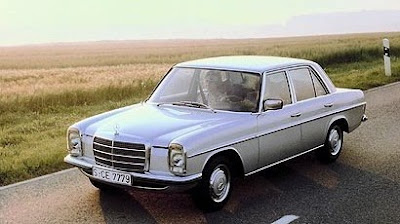
Estava decidido.
Poucos dias depois, vi na Internet o anúncio do meu à venda.
Dia 31 de Dezembro de 2005 fui ver o arranque do Dakar a Lisboa e, no caminho, fiz um desvio por Viseu para ver o “bicho”. Nem andava: tinham-lhe colocado gasolina no estômago e requeria uma lavagem, com risco de danificar a bomba injectora.
Passados alguns dias fomos buscá-lo de reboque e depositámo-lo em casa.
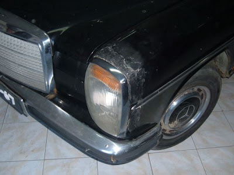
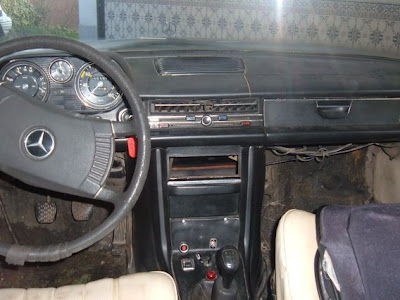
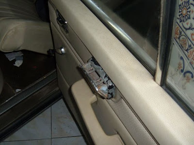
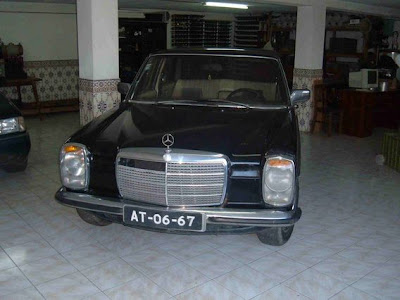
A odisseia começou.
Começámos a desmontá-lo todo, catalogando todas as peças retiradas, de modo que não sobrassem peças aquando da montagem.
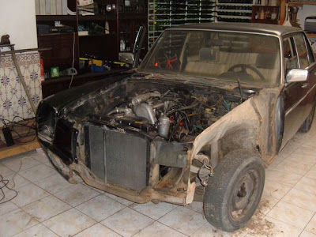
Foi todo desmontado até ao osso por mim e pelo meu pai. Contudo, tivemos de recorrer a serviços externos para áreas onde não tínhamos condições ou capacidade para sermos nós a efectuar. Nunca estivemos ligados ao ramo automóvel em nenhuma vertente.
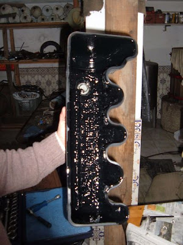
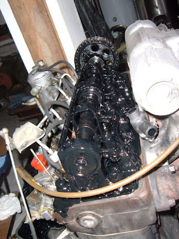
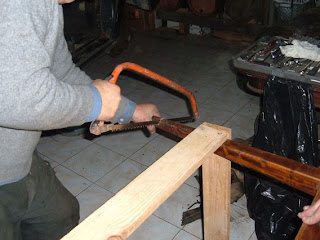
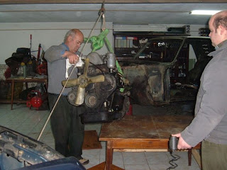
O conserto de chapa e pintura foi efectuado numa oficina de chapeiro de um primo meu, que me fez um bom desconto. A rectificação do motor foi feita num local próprio e não num mecânico qualquer. Os estofos também foram novos e efectuados por profissionais, e a finalização da parte eléctrica foi feita por um tio meu que é electricista de automóveis.
E agora dizem vocês: então não fizeste nada no carro? Pois é. Apesar de tudo isso, desmontar e montar um carro de novo dá mesmo muito trabalho, para além do que nos vem à cabeça. Muito trabalho de investigação, viagens às sucatas, horas na Internet, onde muitos cibernautas deram uma preciosa ajuda.
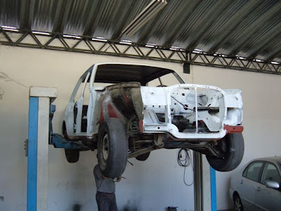
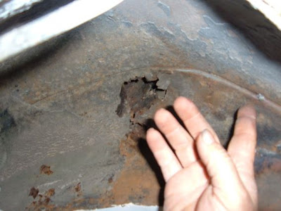
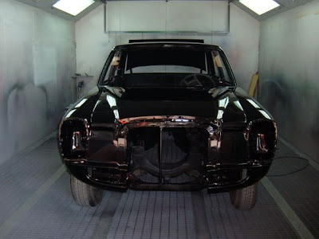
Devo destacar com um grande agradecimento dois utilizadores do fórum “ambenz”: o Faísca, pelas suas dicas de sites onde ir buscar informação para o meu bicho, e especialmente o Nuno Pinto, que se prontificou a vir a minha casa com o seu W115 para eu poder tirar dúvidas e perceber o que era um W115 a funcionar.
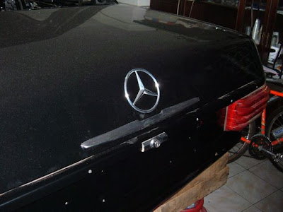
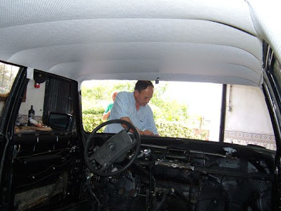
Mas uma coisa digo: foi uma experiência fabulosa a todos os níveis. O carro ficou exactamente como eu queria, nas condições que eu queria.
Pelo meio houve imensas peripécias, que não vou descrever, para não correr o risco de transformar isto num livro.
Para informações técnicas sobre este modelo podem encontrar neste mesmo site mais detalhes. Por isso não vou divagar por aí, mas sim descrever este carro, os seus extras e testemunhar o prazer de condução que transmite.
Este carro, como já notaram, é um sedam de 4 portas. Tem um conforto de utilização para os passageiros bastante assinalável. É um carro que perdoa praticamente todas as imperfeições da estrada, diria até mais que alguns automóveis modernos, fruto da sua suspensão independente.
No capítulo do conforto, está dotado com encostos de cabeça nos bancos dianteiros, encosto de braço rebatível para o condutor, encosto de braço traseiro, vidros eléctricos à frente, retrovisores reguláveis por dentro com vidro anti-encandeamento, antena eléctrica, relógio e aquecimento muito competente, inclusive para os pés dos passageiros traseiros.
A nível de comportamento, com apenas 60 cv nesta carroçaria, é naturalmente lento — muito lento, principalmente nas subidas. Contudo, as médias que tenho feito com ele são de 8,3 l/100 km, atinge com alguma facilidade os 100 km/h e faz boas viagens à velocidade de cruzeiro de 110/120 km/h.
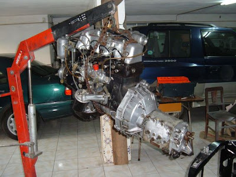
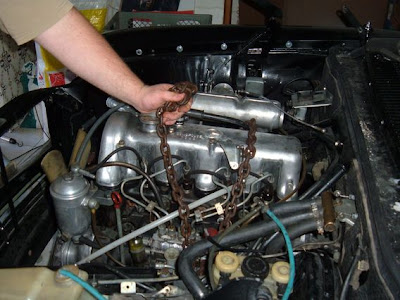
Dinamicamente é a típica “banheira”, balouçando como um barco quando se tem de serpentear por alguns carros, fruto da suspensão pensada no conforto dos passageiros. Mas isso faz parte do seu carácter.
A direcção assistida é um espanto: leve, mais leve que a dos meus outros veículos. O volante enorme e fino completa o quadro. A brecagem é a que todos os condutores de Mercedes estão habituados: fabulosa.
Um carro muito fácil de conduzir no dia a dia e com uma boa economia de utilização.
Enfim, um dos meus clássicos de sonho já está comprado e pronto. Agora que tenho um económico, já me posso atirar para um com mais estilo, menos económico mas simplesmente fabuloso: um 280 SL (Pagode).
Quem sabe, um dia…
Resultado final
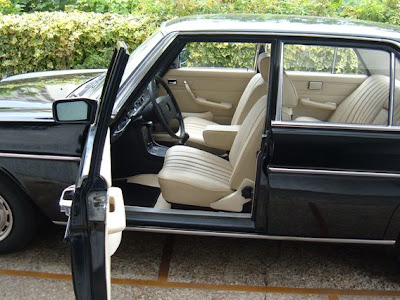
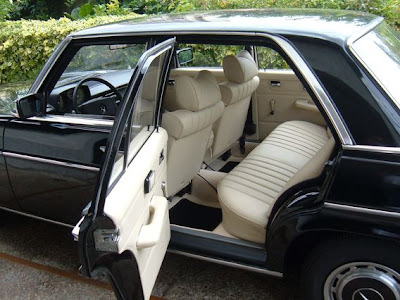
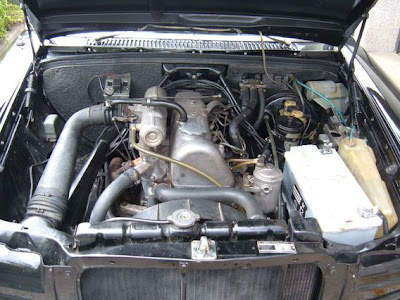
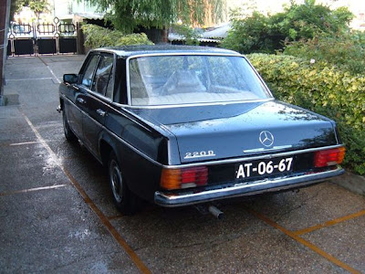
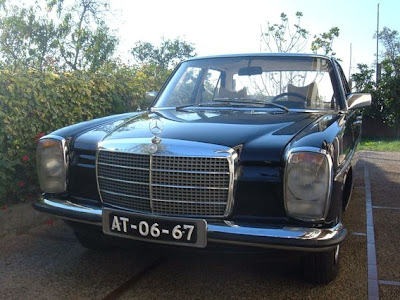
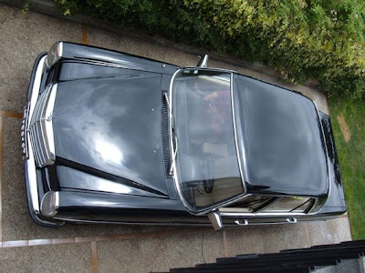